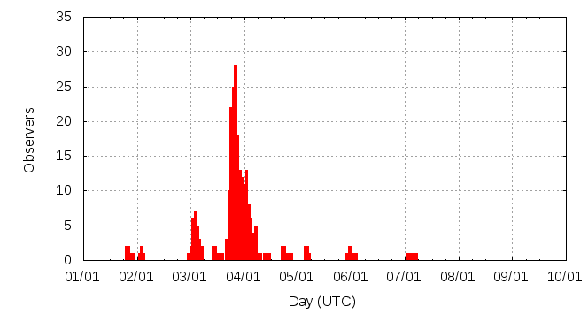

[ www.imo.net ]
This page shows automated results of the Quadrantids 2014, based on visual observations reported by citizen scientists through the report form of the International Meteor Organization (IMO). The information on this page is generated automatically; for scientific use please refer to manual analyses published in scientific journals (such as WGN). Send your feedback regarding this page to Geert Barentsen.
Page contents:
Note that the data will finally go into the Visual Meteor Database (VMDB) with manual inspection and rectifications. We are curretly completing the files of 2008-2011. The VMDB is an enormous project - any help will be greatly appreciated.
Page generated: 2014 April 23 at 10:57 UTC.
The graph below shows the ZHR (Zenithal Hourly Rate), which is the number of meteors an observer would see under a very dark sky with the radiant of the shower in zenith.
ZHRmax = 315 based on 2134 Quadrantids reported in 296 intervals, assuming population index r = 2.1

| Time (UTC) | Solarlon | nINT | nQUA | ZHR | Particle density | |
|---|---|---|---|---|---|---|
| 2014-01-01 20:49 | 281.171 | 4 | 11 | 14 | ±4 | 24 / 109·km3 |
| 2014-01-02 02:39 | 281.419 | 4 | 3 | 12 | ±6 | 20 / 109·km3 |
| 2014-01-03 01:19 | 282.381 | 9 | 10 | 11 | ±3 | 19 / 109·km3 |
| 2014-01-03 02:11 | 282.419 | 7 | 12 | 12 | ±3 | 20 / 109·km3 |
| 2014-01-03 02:54 | 282.449 | 7 | 15 | 16 | ±4 | 27 / 109·km3 |
| 2014-01-03 03:26 | 282.472 | 5 | 17 | 18 | ±4 | 31 / 109·km3 |
| 2014-01-03 03:54 | 282.492 | 3 | 13 | 16 | ±4 | 27 / 109·km3 |
| 2014-01-03 04:28 | 282.516 | 4 | 24 | 22 | ±4 | 38 / 109·km3 |
| 2014-01-03 04:55 | 282.534 | 2 | 15 | 22 | ±6 | 38 / 109·km3 |
| 2014-01-03 05:25 | 282.555 | 2 | 18 | 27 | ±6 | 46 / 109·km3 |
| 2014-01-03 10:52 | 282.787 | 3 | 26 | 73 | ±14 | 124 / 109·km3 |
| 2014-01-03 11:27 | 282.812 | 2 | 25 | 81 | ±16 | 138 / 109·km3 |
| 2014-01-03 12:46 | 282.868 | 2 | 16 | 50 | ±12 | 85 / 109·km3 |
| 2014-01-03 13:31 | 282.900 | 4 | 38 | 68 | ±11 | 116 / 109·km3 |
| 2014-01-03 14:04 | 282.923 | 3 | 31 | 67 | ±12 | 114 / 109·km3 |
| 2014-01-03 17:28 | 283.068 | 2 | 17 | 139 | ±33 | 237 / 109·km3 |
| 2014-01-03 18:12 | 283.099 | 4 | 30 | 111 | ±20 | 189 / 109·km3 |
| 2014-01-03 18:36 | 283.116 | 6 | 41 | 100 | ±15 | 170 / 109·km3 |
| 2014-01-03 19:01 | 283.134 | 8 | 87 | 176 | ±19 | 300 / 109·km3 |
| 2014-01-03 19:40 | 283.161 | 18 | 154 | 224 | ±18 | 382 / 109·km3 |
| 2014-01-03 20:04 | 283.178 | 15 | 137 | 245 | ±21 | 418 / 109·km3 |
| 2014-01-03 20:36 | 283.201 | 21 | 213 | 239 | ±16 | 407 / 109·km3 |
| 2014-01-03 21:08 | 283.223 | 11 | 118 | 179 | ±16 | 305 / 109·km3 |
| 2014-01-03 21:42 | 283.247 | 14 | 127 | 139 | ±12 | 237 / 109·km3 |
| 2014-01-03 22:07 | 283.265 | 6 | 56 | 146 | ±19 | 249 / 109·km3 |
| 2014-01-03 22:44 | 283.291 | 10 | 80 | 94 | ±10 | 160 / 109·km3 |
| 2014-01-03 23:11 | 283.310 | 7 | 32 | 83 | ±14 | 141 / 109·km3 |
| 2014-01-03 23:46 | 283.335 | 10 | 73 | 78 | ±9 | 133 / 109·km3 |
| 2014-01-04 00:13 | 283.354 | 8 | 34 | 66 | ±11 | 113 / 109·km3 |
| 2014-01-04 00:47 | 283.378 | 13 | 94 | 77 | ±8 | 131 / 109·km3 |
| 2014-01-04 01:16 | 283.399 | 13 | 112 | 72 | ±7 | 123 / 109·km3 |
| 2014-01-04 01:50 | 283.423 | 8 | 50 | 71 | ±10 | 121 / 109·km3 |
| 2014-01-04 02:21 | 283.445 | 11 | 96 | 67 | ±7 | 114 / 109·km3 |
| 2014-01-04 02:51 | 283.466 | 8 | 51 | 53 | ±7 | 90 / 109·km3 |
| 2014-01-04 03:21 | 283.488 | 7 | 47 | 44 | ±6 | 75 / 109·km3 |
| 2014-01-04 03:49 | 283.507 | 5 | 32 | 41 | ±7 | 70 / 109·km3 |
| 2014-01-04 04:23 | 283.531 | 7 | 47 | 38 | ±5 | 65 / 109·km3 |
| 2014-01-04 04:54 | 283.554 | 5 | 49 | 43 | ±6 | 73 / 109·km3 |
| 2014-01-04 05:27 | 283.577 | 2 | 25 | 41 | ±8 | 70 / 109·km3 |
| 2014-01-04 09:19 | 283.741 | 3 | 10 | 11 | ±3 | 19 / 109·km3 |
| 2014-01-04 18:16 | 284.121 | 2 | 11 | 315 | ±91 | 537 / 109·km3 |
| 2014-01-05 03:53 | 284.530 | 3 | 11 | 7 | ±2 | 12 / 109·km3 |
| 2014-01-05 05:25 | 284.595 | 1 | 5 | 7 | ±3 | 12 / 109·km3 |
| 2014-01-06 00:45 | 285.416 | 3 | 11 | 9 | ±3 | 15 / 109·km3 |
| 2014-01-07 03:27 | 286.550 | 4 | 10 | 5 | ±2 | 9 / 109·km3 |
The reported intervals are automatically added together into the bins shown above, based on the number of meteors and the distribution of the intervals. For each bin, the following parameters are computed:
Data has been received from 54 observers in 19 countries. Thank you for your efforts!
Note: click on the map for an interactive version.

| Observer | Country | Teff | nQUA |
|---|---|---|---|
| Ana Cernok | Serbia | 4.17h | 20 |
| Wushuang Chenye | China | 0.20h | 23 |
| Seok-hee Cho | South Korea | 2.58h | 15 |
| Daniel Cosovanu | Romania | 0.97h | 16 |
| Ilie Cosovanu | Romania | 0.24h | 11 |
| Tibor Csorgei | Slovakia | 2.00h | 23 |
| Mark Davis | United States | 2.00h | 4 |
| Tomasz Fajfer | Poland | 0.50h | 7 |
| Jin Geng | China | 0.73h | 27 |
| Carl Hergenrother | United States | 0.97h | 22 |
| Chengyun Huang | China | 1.08h | 7 |
| Shan Huang | China | 3.08h | 27 |
| Omri Katz | Israel | 1.25h | 20 |
| Pete Kozich | United States | 1.03h | 29 |
| Maciej Kwinta | Poland | 2.50h | 17 |
| Reizhe Li | China | 0.5h | 18 |
| Xinge Liu | Christmas Island | 0.10h | 8 |
| Aleksei Makarow | Russia | 0.83h | 12 |
| Roman Makhnenko | Russia | 4.85h | 85 |
| Qiang Ma | China | 1.50h | 147 |
| Yinxing Ma | China | 0.64h | 13 |
| Frederic Merlin | France | 3.47h | 68 |
| Michael Nolle | Malta | 2.80h | 46 |
| Ella Ratz | Israel | 2.40h | 39 |
| Xing Ren | China | 1.15h | 98 |
| Kai Schultze | Germany | 1.55h | 33 |
| Costantino Sigismondi | Italy | 0.5h | 4 |
| Andrzej Skoczewski | Poland | 6.42h | 63 |
| Ulrich Sperberg | Germany | 2.08h | 46 |
| Wesley Stone | United States | 1.61h | 85 |
| Ilan Tchenak | Israel | 1.92h | 47 |
| Rushikesh Tilak | India | 1.00h | 4 |
| Jurgen Rendtel | Germany | 14.37h | 174 |
| Karoly Jonas | Hungary | 5.58h | 56 |
| Terrence Ross | United States | 1.70h | 8 |
| Vilem Heblik | Czech Republic | 4.1h | 59 |
| Maciek Myszkiewicz | Poland | 2.91h | 37 |
| Sasha Prokofyev | Russia | 1h | 3 |
| Branislav Savic | Serbia | 7.22h | 72 |
| Michel Vandeputte | Belgium | 13.63h | 159 |
| Anna Levina | Israel | 2.58h | 44 |
| Christoph Gerber | Germany | 0.97h | 21 |
| Tomasz Lenart | Poland | 2.00h | 28 |
| Marija Todorovic | Serbia | 3.2h | 18 |
| Hendrik Vandenbruaene | Belgium | 1.36h | 26 |
| Valentin Velkov | Bulgaria | 1.00h | 3 |
| Roland Winkler | Germany | 2.58h | 38 |
| Lukasz Wozniak | Poland | 5.04h | 100 |
| Kexuan Wu | China | 0.50h | 16 |
| Keixuan Wu | China | 0.50h | 16 |
| Oliver Wusk | Germany | 6.96h | 133 |
| Yuqin Xu | China | 0.25h | 6 |
| Jingyi Zhao | China | 0.33h | 23 |
| Nianfeng Zhang | China | 2.44h | 172 |
| Xiang Zhan | China | 0.82h | 98 |
| Meiru Zhu | China | 0.50h | 16 |
| Yusong Zhu | China | 0.60h | 13 |
Create your own analysis. The files below can be opened using Excel:
qua2014_rate.csv (number of meteors per interval per observer)
qua2014_magn.csv (number of meteors per magnitude bin per observer)
The information on this page may be distributed freely provided credit is given to the International Meteor Organization (IMO) and, when possible, to the individual observers. The computer facilities to generate this page are provided by ESA/RSSD and Armagh Observatory.
References: